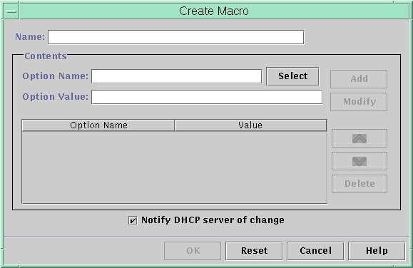

Previous
Previous
 How to Add Options to a DHCP Macro (DHCP
Manager)
How to Add Options to a DHCP Macro (DHCP
Manager)
In DHCP Manager, select the Macros tab.
See How to Start and Stop DHCP Manager for information about DHCP Manager.
Select the macro that you want to change.
Choose Properties from the Edit menu.
The Macro Properties dialog box opens.
In the Option Name field, specify the name of an option by using one of the following methods:
Click the Select button next to the Option Name field to select an option to add to the macro.
The Select Option dialog box displays an alphabetized list of names of standard category options and descriptions. If you want to add an option that is not in the standard category, use the Category list to select a category.
See About DHCP Macros for more information about macro categories.
Type Include if you want to include a reference to an existing macro in the new macro.
Type the value for the option in the Option Value field.
If you typed Include as the option name, you must specify the name of an existing macro in the Option Value field.
Click Add.
The option is added to the bottom of the list of options in this macro. To change the option's position in the macro, select the option and click the arrow buttons to move the option up or down in the list.
Select Notify DHCP Server of Change.
This selection tells the DHCP server to reread the dhcptab table to put the change into effect immediately after you click OK.
Click OK.
How to Add Options to a DHCP Macro (dhtadm)
Become superuser or assume a role or user name that is assigned to the DHCP Management profile.
For more information about the DHCP Management profile, see Setting Up User Access to DHCP Commands.
Roles contain authorizations and privileged commands. For more information about roles, see "Configuring RBAC (Task Map)" in System Administration Guide: Security Services.
Add options to a macro by typing a command of the following format:
# dhtadm -M -m macroname -e 'option=value' -g
For example, to add the ability to negotiate leases in the macro bluenote, you would type the following command:
# dhtadm -M -m bluenote -e 'LeaseNeg=_NULL_VALUE' -g
Note that if an option does not require a value, you must use _NULL_VALUE as the value for the option.
How to Delete Options From a DHCP Macro
(DHCP Manager)
In DHCP Manager, select the Macros tab.
See How to Start and Stop DHCP Manager for information about DHCP Manager.
Select the macro that you want to change.
Choose Properties from the Edit menu.
The Macro Properties dialog box opens.
Select the option that you want to remove from the macro.
Click Delete.
The option is removed from the list of options for this macro.
Select Notify DHCP Server of Change.
This selection tells the DHCP server to reread the dhcptab table to put the change into effect immediately after you click OK.
Click OK.
How to Delete Options From a DHCP Macro
(dhtadm)
Become superuser or assume a role or user name that is assigned to the DHCP Management profile.
For more information about the DHCP Management profile, see Setting Up User Access to DHCP Commands.
Roles contain authorizations and privileged commands. For more information about roles, see "Configuring RBAC (Task Map)" in System Administration Guide: Security Services.
Delete an option from a macro by typing a command of the following format:
# dhtadm -M -m macroname -e 'option=' -g
For example, to remove the ability to negotiate leases in the macro bluenote, you would type the following command:
# dhtadm -M -m bluenote -e 'LeaseNeg=' -g
If an option is specified with no value, the option is removed from the macro.
Creating DHCP Macros
You might want to add new macros to your DHCP service to support clients with specific needs. You can use the dhtadm -A -m command or DHCP Manager's Create Macro dialog box to add macros. See the dhtadm(1M) man page for more information about the dhtadm command.
The following figure shows DHCP Manager's Create Macro dialog box.
Figure 15-16 Create Macro Dialog Box in DHCP Manager
How to Create a DHCP Macro (DHCP Manager)
In DHCP Manager, select the Macros tab.
See How to Start and Stop DHCP Manager for information about DHCP Manager.
Choose Create from the Edit menu.
The Create Macro dialog box opens.
Type a unique name for the macro.
The name can be up to 128 alphanumeric characters. If you use a name that matches a vendor class identifier, network address, or client ID, the macro is processed automatically for appropriate clients. If you use a different name, the macro is not processed automatically. The macro must be assigned to a specific IP address or included in another macro that is processed automatically. See Macro Processing by the DHCP Server for more detailed information.
Click the Select button, which is next to the Option Name field.
The Select Option dialog box displays an alphabetized list of names of standard category options and their descriptions. If you want to add an option that is not in the standard category, use the Category list. Select the category that you want from the Category list. See About DHCP Options for more information about option categories.
Select the option to add to the macro, and click OK.
The Macro Properties dialog box displays the selected option in the Option Name field.
Type the value for the option in the Option Value field, and click Add.
The option is added to the bottom of the list of options in this macro. To change the option's position in the macro, select the option and click the arrow buttons to move the option up or down in the list.
Repeat Step 5 and Step 6 for each option you want to add to the macro.
Select Notify DHCP Server of Change when you are finished adding options.
This selection tells the DHCP server to reread the dhcptab table to put the change into effect immediately after you click OK.
Click OK.